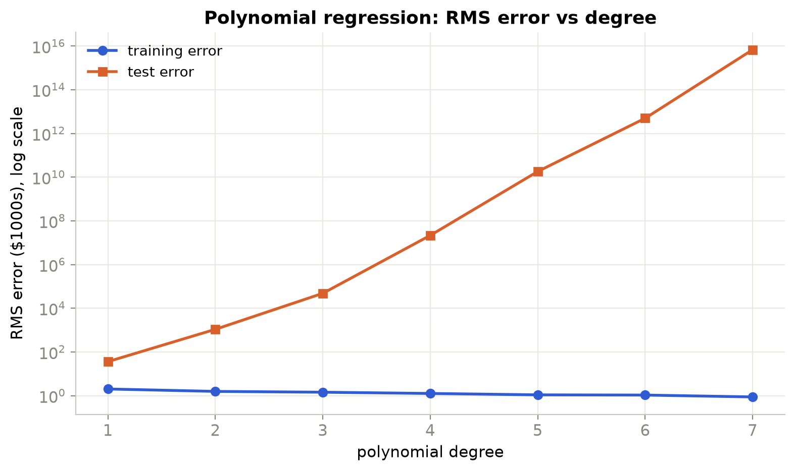
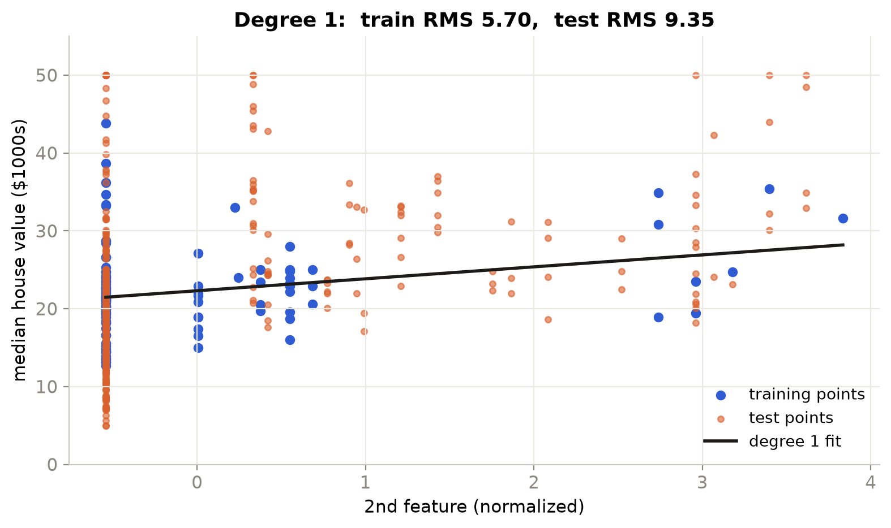
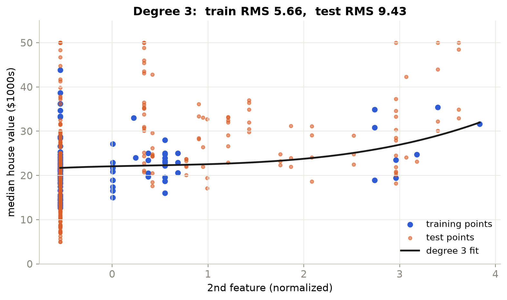
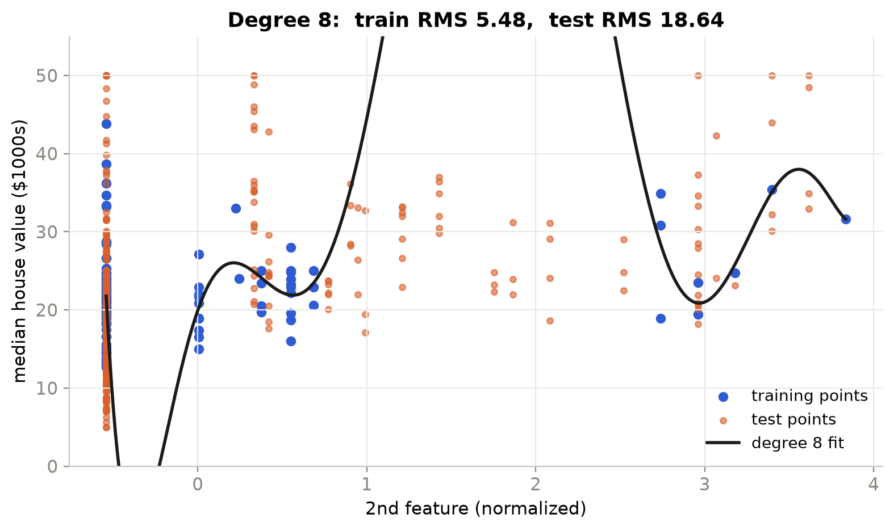
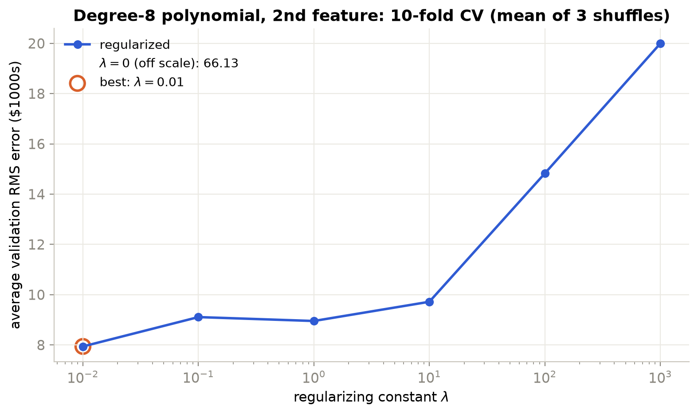
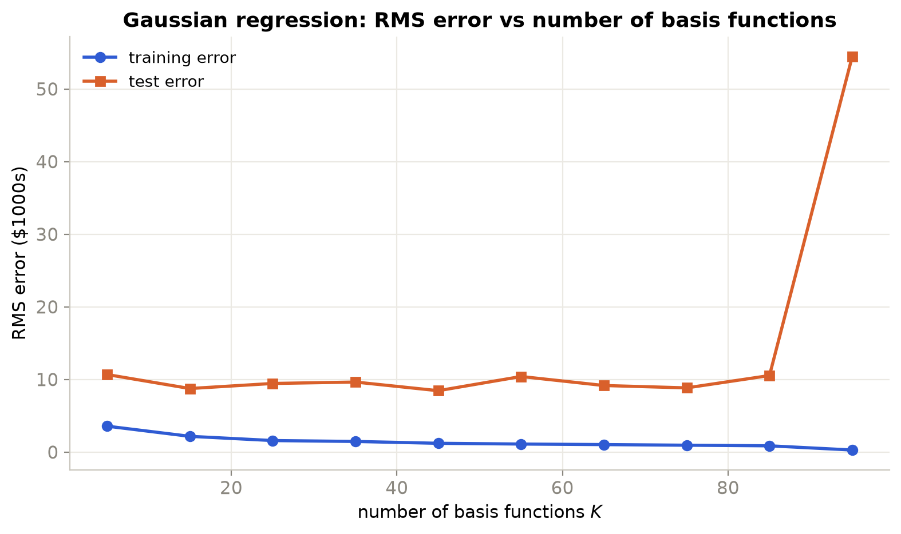
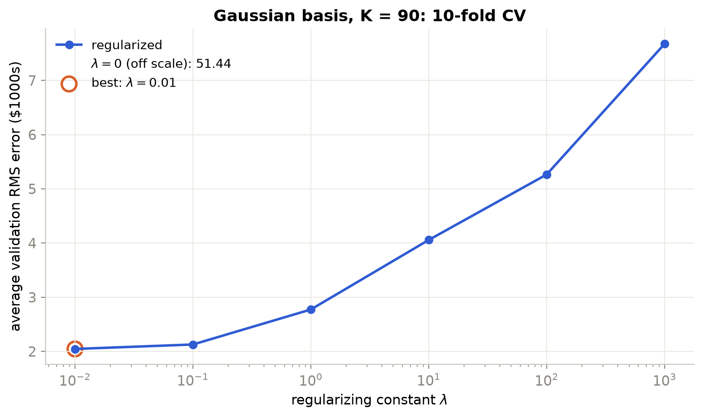

Polynomial basis function regression
Setup
The data are the 506 Boston Housing towns, with 13 features and the median house value (in thousands of dollars) as the target. The first 100 rows are the training set and the remaining 406 are the test set. Every feature is normalized as $x \leftarrow (x - \mu)/\sigma$ using the mean and standard deviation of the training rows only, and the same $\mu,\sigma$ are applied to the test rows. (CHAS is 0 in all 100 training rows, so $\sigma = 0$; I left that feature unscaled. Its training column is all zeros, so its weight is 0.)
A degree-$M$ model uses monomials of each single feature and no cross-terms:
This is the course's ridge regression formula. The bias $w_0$ is included in $\mathbf{w}$, so
it is penalized along with the other weights; $\lambda = 0$ is ordinary least squares. The solve uses np.linalg.lstsq, which still returns
the minimum-norm answer when $\Phi^\top\Phi$ is singular. Errors are RMS errors in thousands of dollars.
(a) Training and test error vs degree

| Degree | 1 | 2 | 3 | 4 | 5 | 6 | 7 |
|---|---|---|---|---|---|---|---|
| Train RMS | 2.04 | 1.58 | 1.45 | 1.27 | 1.10 | 1.07 | 0.88 |
| Test RMS | 36.4 | 1.1e3 | 4.9e4 | 2.2e7 | 1.8e10 | 5.0e12 | 6.9e15 |
Training error falls steadily with degree (2.04 → 0.88), as it must when a model gains parameters. Test error does the opposite and explodes, from 36 at degree 1 to $10^{15}$ at degree 7. This is overfitting, made extreme by two things. First, the model has 92 parameters at degree 7 and only 100 training points. Second, the first 100 rows are not representative of the rest: for example CRIM has standard deviation 0.39 in the training rows but reaches 89 in the test rows, which is over 200 standard deviations after normalization. A polynomial extrapolates such values wildly, and $x^7$ turns an already large input into an astronomically large one. Even degree 1 has a test error (36) far above its training error (2.0) for the same reason.
(b) Learned weights, degree 1
Weights are for the normalized features, so each is the change in predicted price (thousands of dollars) for a one-standard-deviation increase in that feature (in the training rows).
| Weight | Feature | Value | Weight | Feature | Value |
|---|---|---|---|---|---|
| $w_0$ | bias | 22.309 | $w_7$ | AGE | −2.166 |
| $w_1$ | CRIM | −1.338 | $w_8$ | DIS | 0.011 |
| $w_2$ | ZN | 0.123 | $w_9$ | RAD | −0.194 |
| $w_3$ | INDUS | −0.531 | $w_{10}$ | TAX | −0.349 |
| $w_4$ | CHAS | 0 | $w_{11}$ | PTRATIO | 0.261 |
| $w_5$ | NOX | 1.003 | $w_{12}$ | B | 0.181 |
| $w_6$ | RM | 4.196 | $w_{13}$ | LSTAT | 0.149 |
Here $w_j$ multiplies the $j$-th feature and $w_0$ is the bias, so the 6th feature (average rooms per dwelling, RM) has weight 4.196 and the 8th feature (weighted distance to the five employment centres, DIS) has weight 0.011. (The question calls the 6th-feature weight $w_5$, which is the same weight if the bias is counted separately.)
RM is reasonable. It is the largest weight and positive: more rooms per dwelling means a higher house value. Undoing the normalization (÷ 0.488, the training standard deviation of RM) gives about 8.6 thousand dollars of price per extra room.
DIS is not what I would expect. I would expect houses farther from the employment centres to be cheaper (a negative weight), or at least some effect. The learned weight is essentially 0 (0.011). A likely reason is that DIS is correlated with other features in the training rows (0.60 with ZN, −0.48 with NOX, −0.30 with AGE), so least squares may attribute its effect to them (AGE gets −2.17). With 100 points and 13 correlated features, individual weights are not reliable, so I would not interpret this weight on its own.
(c) One feature at a time
polynomial_regression_1d_vis uses only the 2nd feature (ZN, the proportion of
large residential lots), normalized, and fits polynomials of degree 1 to 10. Most towns have
ZN = 0, which is the column of points at the far left.
| Degree | 1 | 2 | 3 | 4 | 5 | 6 | 7 | 8 | 9 | 10 |
|---|---|---|---|---|---|---|---|---|---|---|
| Train RMS | 5.70 | 5.67 | 5.67 | 5.65 | 5.65 | 5.65 | 5.50 | 5.48 | 5.47 | 5.44 |
| Test RMS | 9.35 | 9.45 | 9.43 | 9.39 | 9.39 | 9.36 | 10.4 | 18.6 | 15.3 | 65.4 |



Degree 1 is a nearly flat line: ZN explains little of the price, so train and test error are both high (5.70 and 9.35). Degree 3 is almost the same curve; going from degree 1 to 6 barely changes either error, so the feature simply has little to give. Degree 8 passes close to the clusters of training points, so training error improves slightly (5.48), but between and beyond them it swings far from the data, and test error roughly doubles (18.6). By degree 10 it is 65. The extra flexibility fits noise, not signal.
(d) L2 regularization with cross-validation
Degree 8, 2nd feature only, first 100 points. For 10-fold cross-validation I shuffled the 100 points with a fixed seed and split them into 10 folds of 10. For each $\lambda$ the model is fit on 9 folds (90 points) and scored on the held-out fold, and the ten validation RMS errors are averaged. Because cross-validation on only 100 points depends noticeably on how they are split, I repeated it with three shuffles (seeds 0, 1, 2). The plot shows the average over the three shuffles.

| $\lambda$ | 0 | 0.01 | 0.1 | 1 | 10 | 100 | 1000 |
|---|---|---|---|---|---|---|---|
| Fold seed 0 | 178 | 10.15 | 8.66 | 8.07 | 8.92 | 14.22 | 20.05 |
| Fold seed 1 | 10.85 | 6.76 | 9.23 | 9.42 | 10.14 | 15.17 | 19.92 |
| Fold seed 2 | 9.19 | 6.91 | 9.44 | 9.37 | 10.09 | 15.08 | 20.00 |
| Mean | 66.1 | 7.94 | 9.11 | 8.95 | 9.72 | 14.82 | 19.99 |
I would choose $\lambda = 0.01$. It has the lowest validation error averaged over the three shuffles (7.94), and it is also the best value for two of the three splits (seeds 1 and 2). Seed 0 on its own favours $\lambda = 1$ (8.07 vs 10.15). Normalizing inside each fold instead of once on all 100 points moves seed 0's best value again, to $\lambda = 10$. That one split can change the answer this much shows how noisy cross-validation is with only 100 points, which is why I base the choice on the average rather than on a single split. Since 0.01 is the smallest value in the grid, the true optimum may lie below the tested range.
All three splits agree on the rest of the picture. Large $\lambda$ (100, 1000) is clearly worse (about 15 and 20) because the penalty also shrinks the bias and pulls every prediction toward 0 instead of toward the mean price (about 22). The unregularized fit is unreliable: 178 with seed 0 but about 10 with seeds 1 and 2, depending on whether a held-out fold forces it to extrapolate.
The choice of penalizing the bias matters here. If the bias is left unpenalized (as
sklearn's Ridge does), $\lambda = 1000$ becomes the best (average validation RMS
5.93 with seed 0), because large $\lambda$ then shrinks the model toward the mean rather than
toward 0.
Shuffling matters here. With consecutive folds (rows 1–10, 11–20, …) the $\lambda = 0$ error is about $1.5 \times 10^5$ instead of 178, because one fold (rows 51–60) holds the most extreme ZN value ($z = 3.83$). When that fold is held out, the degree-8 polynomial has to extrapolate to it, and that single fold dominates the average. Shuffling spreads unusual points across folds, so the curve reflects the model rather than one unlucky split.
Gaussian basis function regression
All 13 normalized features are used. The model is $\hat y = w_0 + \sum_{j=1}^{K} w_j\,\phi_j(\mathbf{x})$ with $\phi_j(\mathbf{x}) = \exp\!\big(-\|\mathbf{x} - \boldsymbol\mu_j\|^2 / 2s^2\big)$ and the centers $\boldsymbol\mu_j$ taken from the first $K$ points of a random permutation of the training points (fixed seed; the same permutation is used for every $K$, so each model's centers include the previous model's). The assignment does not give the width $s$. I set it to the median distance between training points, $s = 4.63$, so neighbouring Gaussians overlap without any one covering everything. It is fixed before looking at errors and is not tuned.
(e) Training and test error vs number of basis functions

| $K$ | 5 | 15 | 25 | 35 | 45 | 55 | 65 | 75 | 85 | 95 |
|---|---|---|---|---|---|---|---|---|---|---|
| Train RMS | 3.57 | 2.17 | 1.59 | 1.46 | 1.21 | 1.11 | 1.03 | 0.95 | 0.87 | 0.29 |
| Test RMS | 10.7 | 8.75 | 9.45 | 9.64 | 8.45 | 10.4 | 9.17 | 8.84 | 10.5 | 54.5 |
Training error decreases as $K$ grows, from 3.6 to 0.87 at $K = 85$, then drops to 0.29 at $K = 95$, where the 96 parameters (95 Gaussians plus bias) can nearly interpolate the 100 points. Test error does not follow it. It stays between about 8.5 and 10.7 for $K$ from 5 to 85 with no clear trend, because each new random center changes the model, and then jumps to 54 at $K = 95$ where the fit is essentially memorizing the training data. This is much better behaved than the polynomial case (test error about 9 instead of $10^{15}$) because Gaussians are local: far from every center they decay to the bias, so unusual test points do not produce huge predictions. The test error is still well above the training error and varies with the random choice of centers.
(f) L2 regularization with cross-validation
All 13 features, $K = 90$ random centers from the 100 training points, 10-fold cross-validation with shuffled folds as in (d). In each fold the model is fit on 90 points with 91 parameters.

| $\lambda$ | 0 | 0.01 | 0.1 | 1 | 10 | 100 | 1000 |
|---|---|---|---|---|---|---|---|
| Avg validation RMS (fold seed 0) | 51.4 | 2.05 | 2.13 | 2.77 | 4.06 | 5.27 | 7.67 |
| Check: fold seed 1 | 38.5 | 1.83 | 1.88 | 2.62 | 4.02 | 5.42 | 7.89 |
The lowest average validation error is at $\lambda = 0.01$ (2.05), so that is the value I would choose; 0.1 is nearly as good (2.13). A second shuffle (seed 1) gives the same choice (1.83). Since 0.01 is the smallest value in the grid, the true optimum may lie below the tested range. Without regularization the model has more parameters than training points in each fold, and the validation error is 51. Even $\lambda = 0.01$ reduces it by a factor of about 25. Beyond that the error rises steadily (to 7.7 at $\lambda = 1000$) as the weights, bias included, are shrunk too far and the model underfits. The cross-validation errors here (about 2) are far lower than the Part 2(e) test errors (about 9) because the validation folds come from the same 100 rows as the training data, while the test rows are a different, more varied part of the dataset, so the two should not be compared directly.
Python implementation
regression.py holds the data loading, basis functions, the fit, cross-validation
and one function per question: polynomial_regression (a),
polynomial_regression_1d_vis (c), polynomial_regression_reg (d),
gaussian_regression (e) and gaussian_regression_reg (f). Part (b)
uses fit with a degree-1 basis. plots.py only draws. Run
python regression.py from A2/code/ to print every number on this
page and save the plots to A2/media/. The data file housing.csv is the
Boston Housing data (StatLib copy, 506 rows in the original order).
regression.py: data, models & driver Python
"""
SYDE 572 Assignment 2: linear basis function regression on the Boston Housing data.
Part 1 polynomial basis : a) polynomial_regression b) learned weights
c) polynomial_regression_1d_vis d) polynomial_regression_reg
Part 2 Gaussian basis : e) gaussian_regression f) gaussian_regression_reg
python regression.py (prints the numbers and saves the plots to ../media/)
"""
import os
import numpy as np
import plots
HERE = os.path.dirname(os.path.abspath(__file__))
MEDIA = os.path.join(HERE, "..", "media")
LAMBDAS = [0, 0.01, 0.1, 1, 10, 100, 1000]
N_TRAIN = 100
# ---------- data, features, fitting ----------
def load_data():
"""First 100 rows train, the rest test. Features are normalized with the training mean and std."""
data = np.loadtxt(os.path.join(HERE, "housing.csv"), delimiter=",")
X, y = data[:, :-1], data[:, -1]
mean, std = X[:N_TRAIN].mean(axis=0), X[:N_TRAIN].std(axis=0)
std[std == 0] = 1 # CHAS is 0 in all 100 training rows: leave it unscaled (its weight is then 0)
Xn = (X - mean) / std
return Xn[:N_TRAIN], y[:N_TRAIN], Xn[N_TRAIN:], y[N_TRAIN:], mean, std
def poly_basis(X, degree):
"""[1, x1..x13, x1^2..x13^2, ...]: monomials of each single feature, no cross-terms."""
return np.hstack([np.ones((len(X), 1))] + [X ** p for p in range(1, degree + 1)])
def gaussian_basis(X, centers, sigma):
"""[1, phi_1..phi_K] with phi_j(x) = exp(-||x - mu_j||^2 / (2 sigma^2))."""
d2 = ((X[:, None, :] - centers[None, :, :]) ** 2).sum(axis=2)
return np.hstack([np.ones((len(X), 1)), np.exp(-d2 / (2 * sigma ** 2))])
def fit(Phi, y, lam=0.0):
"""Ridge regression w = (Phi^T Phi + lam I)^-1 Phi^T y, as in the course formula: every weight, bias included, is penalized.
lstsq on the stacked system [Phi; sqrt(lam) I] gives this and also handles lam = 0 when Phi^T Phi is singular."""
R = np.sqrt(lam) * np.eye(Phi.shape[1])
w, *_ = np.linalg.lstsq(np.vstack([Phi, R]), np.concatenate([y, np.zeros(len(R))]), rcond=None)
return w
def rms(Phi, y, w):
return np.sqrt(np.mean((Phi @ w - y) ** 2))
def cross_validate(Phi, y, lambdas, folds=10, seed=0):
"""Average validation RMS over `folds` randomly shuffled folds (fixed seed), for each lambda."""
perm = np.random.default_rng(seed).permutation(len(y))
idx = np.array_split(perm, folds)
err = []
for lam in lambdas:
e = []
for val in idx:
tr = np.setdiff1d(np.arange(len(y)), val)
e.append(rms(Phi[val], y[val], fit(Phi[tr], y[tr], lam)))
err.append(np.mean(e))
return np.array(err)
# ---------- Part 1: polynomial basis ----------
def polynomial_regression(Xtr, ytr, Xte, yte, degrees=range(1, 8)):
"""(a) Unregularized fit for each degree. Returns train and test RMS."""
train, test = [], []
for d in degrees:
w = fit(poly_basis(Xtr, d), ytr)
train.append(rms(poly_basis(Xtr, d), ytr, w))
test.append(rms(poly_basis(Xte, d), yte, w))
return np.array(train), np.array(test)
def polynomial_regression_1d_vis(Xtr, ytr, Xte, yte, degree, feature=1):
"""(c) Fit one feature only (Xn[:, 1], the 2nd feature). Returns the data and fitted curve for plotting."""
xtr, xte = Xtr[:, [feature]], Xte[:, [feature]]
w = fit(poly_basis(xtr, degree), ytr)
grid = np.linspace(min(xtr.min(), xte.min()), max(xtr.max(), xte.max()), 400)[:, None]
return grid[:, 0], poly_basis(grid, degree) @ w, rms(poly_basis(xtr, degree), ytr, w), rms(poly_basis(xte, degree), yte, w)
def polynomial_regression_reg(Xtr, ytr, degree=8, feature=1, seed=0):
"""(d) 10-fold CV over lambda for a degree-8 polynomial of the 2nd feature."""
Phi = poly_basis(Xtr[:, [feature]], degree)
return cross_validate(Phi, ytr, LAMBDAS, seed=seed)
# ---------- Part 2: Gaussian basis ----------
def pick_sigma(Xtr):
"""Width: median distance between training points, so the Gaussians neither vanish nor cover everything."""
d = np.sqrt(((Xtr[:, None] - Xtr[None]) ** 2).sum(axis=2))
return np.median(d[np.triu_indices(len(Xtr), 1)])
def gaussian_regression(Xtr, ytr, Xte, yte, sigma, Ks=range(5, 100, 10), seed=0):
"""(e) Unregularized fit with K random training points as centers. Returns train and test RMS."""
order = np.random.default_rng(seed).permutation(len(Xtr))
train, test = [], []
for K in Ks:
centers = Xtr[order[:K]]
Phi = gaussian_basis(Xtr, centers, sigma)
w = fit(Phi, ytr)
train.append(rms(Phi, ytr, w))
test.append(rms(gaussian_basis(Xte, centers, sigma), yte, w))
return np.array(train), np.array(test)
def gaussian_regression_reg(Xtr, ytr, sigma, K=90, seed=0, cv_seed=0):
"""(f) 10-fold CV over lambda with K random centers and all 13 features."""
order = np.random.default_rng(seed).permutation(len(Xtr))
Phi = gaussian_basis(Xtr, Xtr[order[:K]], sigma)
return cross_validate(Phi, ytr, LAMBDAS, seed=cv_seed)
# ---------- driver ----------
if __name__ == "__main__":
os.makedirs(MEDIA, exist_ok=True)
plots.setup_style()
Xtr, ytr, Xte, yte, mean, std = load_data()
print(f"train {Xtr.shape}, test {Xte.shape}")
# (a)
degrees = list(range(1, 8))
tr, te = polynomial_regression(Xtr, ytr, Xte, yte, degrees)
print("\n(a) degree train RMS test RMS")
for d, a, b in zip(degrees, tr, te):
print(f" {d:>5} {a:9.3f} {b:10.3f}")
plots.plot_error_curve(degrees, tr, te, "polynomial degree", "Polynomial regression: RMS error vs degree",
os.path.join(MEDIA, "a_poly_error.png"), logy=True)
# (b)
w = fit(poly_basis(Xtr, 1), ytr)
print("\n(b) degree-1 weights (on normalized features)")
print(f" w0 (bias) = {w[0]:.4f}")
for j in range(13):
print(f" w{j + 1:<2} = {w[j + 1]:8.4f}")
# (c)
print("\n(c) 2nd feature only: degree train RMS test RMS")
fits = {}
for d in range(1, 11):
fits[d] = polynomial_regression_1d_vis(Xtr, ytr, Xte, yte, d)
print(f" {d:>5} {fits[d][2]:9.3f} {fits[d][3]:9.3f}")
for d in (1, 3, 8):
grid, curve, a, b = fits[d]
plots.plot_poly_1d(grid, curve, Xtr[:, 1], ytr, Xte[:, 1], yte, d, a, b,
os.path.join(MEDIA, f"c_poly1d_deg{d}.png"))
# (d)
# CV with 100 points is noisy, so repeat it over 3 shuffles and choose lambda from the average
seeds = [0, 1, 2]
cvs = np.array([polynomial_regression_reg(Xtr, ytr, seed=s) for s in seeds])
cv = cvs.mean(axis=0)
print("\n(d) lambda " + " ".join(f"seed {s}" for s in seeds) + " mean")
for lam, row, m in zip(LAMBDAS, cvs.T, cv):
print(f" {lam:>6} " + " ".join(f"{e:6.2f}" for e in row) + f" {m:6.2f}")
print(f" best lambda per seed = {[LAMBDAS[i] for i in cvs.argmin(axis=1)]}, from the mean = {LAMBDAS[int(np.argmin(cv))]}")
plots.plot_cv(LAMBDAS, cv, "Degree-8 polynomial, 2nd feature: 10-fold CV (mean of 3 shuffles)",
os.path.join(MEDIA, "d_poly_cv.png"))
# (e)
sigma = pick_sigma(Xtr)
Ks = list(range(5, 100, 10))
tr, te = gaussian_regression(Xtr, ytr, Xte, yte, sigma, Ks)
print(f"\n(e) sigma = {sigma:.3f} K train RMS test RMS")
for K, a, b in zip(Ks, tr, te):
print(f" {K:>5} {a:9.3f} {b:9.3f}")
plots.plot_error_curve(Ks, tr, te, "number of basis functions $K$",
"Gaussian regression: RMS error vs number of basis functions",
os.path.join(MEDIA, "e_gauss_error.png"))
# (f)
cv = gaussian_regression_reg(Xtr, ytr, sigma)
print("\n(f) lambda avg validation RMS")
for lam, e in zip(LAMBDAS, cv):
print(f" {lam:>6} {e:.3f}")
print(f" best lambda = {LAMBDAS[int(np.argmin(cv))]}")
cv1 = gaussian_regression_reg(Xtr, ytr, sigma, cv_seed=1)
print(f" check, fold seed 1: {np.round(cv1, 2)} best lambda = {LAMBDAS[int(np.argmin(cv1))]}")
plots.plot_cv(LAMBDAS, cv, "Gaussian basis, K = 90: 10-fold CV", os.path.join(MEDIA, "f_gauss_cv.png"))
plots.py: plotting helpers Python
"""
Plotting helpers for SYDE 572 Assignment 2. These only draw: regression.py computes the numbers.
"""
import numpy as np
import matplotlib.pyplot as plt
TRAIN = "#2f5bd3"
TEST = "#d9602b"
POINT = "#1c1b19"
MUTED = "#8a877f"
def setup_style():
plt.rcParams.update({
"figure.facecolor": "white",
"savefig.facecolor": "white",
"font.size": 11,
"axes.titlesize": 13,
"axes.titleweight": "semibold",
"axes.edgecolor": "#c9c6bd",
"axes.linewidth": 0.8,
"axes.spines.top": False,
"axes.spines.right": False,
"axes.grid": True,
"grid.color": "#ebe9e3",
"xtick.color": MUTED,
"ytick.color": MUTED,
"legend.frameon": False,
"legend.fontsize": 10,
})
def _save(fig, fname):
fig.tight_layout()
fig.savefig(fname, dpi=200, bbox_inches="tight")
plt.close(fig)
def plot_error_curve(xs, train, test, xlabel, title, fname, logy=False):
fig, ax = plt.subplots(figsize=(8, 4.8))
ax.plot(xs, train, color=TRAIN, lw=2, marker="o", label="training error")
ax.plot(xs, test, color=TEST, lw=2, marker="s", label="test error")
if logy:
ax.set_yscale("log")
ax.set_xlabel(xlabel)
ax.set_ylabel("RMS error ($1000s)" + (", log scale" if logy else ""))
ax.set_title(title)
ax.legend()
_save(fig, fname)
def plot_poly_1d(grid, curve, xtr, ytr, xte, yte, degree, tr_err, te_err, fname):
fig, ax = plt.subplots(figsize=(8, 4.8))
ax.scatter(xtr, ytr, s=28, color=TRAIN, label="training points")
ax.scatter(xte, yte, s=14, color=TEST, alpha=0.6, label="test points")
ax.plot(grid, curve, color=POINT, lw=2, label=f"degree {degree} fit")
ax.set_ylim(min(ytr.min(), yte.min()) - 5, max(ytr.max(), yte.max()) + 5)
ax.set_xlabel("2nd feature (normalized)")
ax.set_ylabel("median house value ($1000s)")
ax.set_title(f"Degree {degree}: train RMS {tr_err:.2f}, test RMS {te_err:.2f}")
ax.legend()
_save(fig, fname)
def plot_cv(lambdas, err, title, fname):
"""Validation error vs lambda on a log x axis ; lambda = 0 can't be on a log axis, so its error goes in the legend."""
lambdas, err = np.array(lambdas, float), np.array(err)
fig, ax = plt.subplots(figsize=(8, 4.8))
ax.semilogx(lambdas[1:], err[1:], color=TRAIN, lw=2, marker="o", label="regularized")
ax.plot([], [], " ", label=f"$\\lambda = 0$ (off scale): {err[0]:.4g}")
best = np.argmin(err)
ax.scatter([lambdas[best] or np.nan], [err[best]], s=140, facecolor="none", edgecolor=TEST, lw=2,
label=f"best: $\\lambda = {lambdas[best]:g}$")
ax.set_xlabel("regularizing constant $\\lambda$")
ax.set_ylabel("average validation RMS error ($1000s)")
ax.set_title(title)
ax.legend()
_save(fig, fname)
References & acknowledgements
- SYDE 572 Assignment 2 handout.
- Harrison, D. and Rubinfeld, D.L., "Hedonic prices and the demand for clean air", J. Environ. Economics & Management, 5, 81–102, 1978. Data from the StatLib archive (lib.stat.cmu.edu/datasets/boston), as described at the Delve Boston page.
- Plots made with NumPy and Matplotlib.